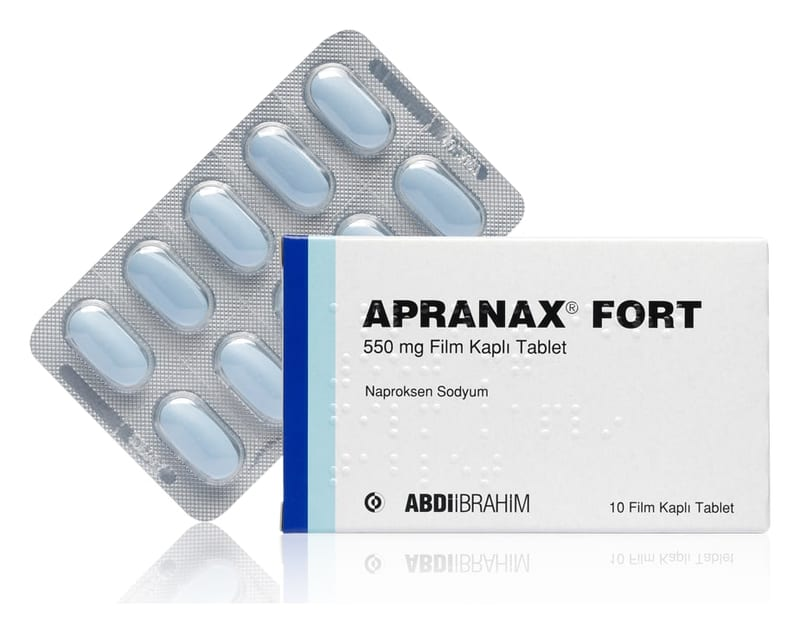

Apranax Fort 550 mg Film Kaplı Tablet, 10 Adet

Ne için kullanılır
KT · Bölüm 12. APRANAX FORT kullanmadan önce dikkat edilmesi gerekenler 3. APRANAX FORT nasıl kullanılır? 4. Olası yan etkiler nelerdir? 5. APRANAX FORT’un saklanması
Başlıkları yer almaktadır.
• APRANAX FORT nedir ve ne için kullanılır ?
• APRANAX FORT, mavi film kaplı oval tabletlerden oluşan 10 ve 20 tabletlik blister ambalajlarda sunulur. • APRANAX FORT, ağrı ve iltihaba etkili (NSAİ) ilaçlar grubundan ağrı kesici etkilere sahip bir ilaçtır.
APRANAX FORT;
• Travma veya diğer durumlara bağlı olarak ortaya çıkan eklem kıkırdağının harabiyeti, ağrı ve fonksiyon kaybıyla karakterize eklem iltihabı, • El ve ayak eklemlerinde gelişen ağrılı eklem iltihabı, • Özellikle omurgada gelişen romatoid artrit benzeri bir hastalık olan ankilozan spondilit, • Proteinin parçalanmasındaki bir soruna bağlı olarak bağ dokusu ve eklem kıkırdağında gözlenen şiddetli ağrı (akut gut) gibi romatizmal hastalıkların tedavisinde iltihap giderici ve ağrı kesici olarak,
• Akut kas iskelet (kemik) sistemi ağrılarında • Kadınlarda adet sancılarına bağlı ağrılarda ağrıyı kesmek amacıyla, • Ortopedik ve cerrahi ameliyatlarda ağrı kesici olarak, • Baş ağrıları (migren tipi dahil) ve diş ağrısında,
kullanılır.